Proposta di identità
Cartamodello
Abra lavora come un modellista: prende le misure nel tuo reparto, prova il caso d'uso in simulazione e sul robot vero, e ti consegna il modello per rifarlo da solo.
Abra lavora come un modellista: prende le misure nel tuo reparto, prova il caso d'uso in simulazione e sul robot vero, e ti consegna il modello per rifarlo da solo.
Il posizionamento raccomandato è "Prima la prova". In sartoria la prova è il momento in cui il capo si prova addosso, prima di tagliare la stoffa buona. La corrispondenza guida il sistema grafico; nei testi per i clienti le fasi si chiamano con le parole del settore.
| Fase nei testi | Logica interna | Cosa vede il cliente |
|---|---|---|
| Sopralluogo e assessment · P0 e P1 | Le misure | Tempi, pesi e spazi misurati nel suo reparto |
| Simulazione · P2 | La prova provvisoria | Il caso d'uso nel modello digitale della sua postazione |
| Prova sul robot e pilota · P3 e P4 | La prova | Il robot vero sul suo pezzo, con criteri scritti prima |
| Consegna e formazione · P5 | Il modello | Codice, simulatore e manuale che restano in azienda |
Lo sportello aperto dell'automa da salone, il campo segnato con il nastro sul pavimento, l'amuleto ABRACADABRA a triangolo e il cartamodello. Il primo richiama il Turco meccanico, che era una truffa; il secondo scivola nella segnaletica di sicurezza; il terzo lega la misura a una formula magica. Il cartamodello copre tutta la promessa, dal prima al dopo.
Ciò che è disegnato in gesso, con un bordo sottile blu, è da approvare e si può cancellare. Ciò che è cucito, in flanella piena, è misurato e firmato. Vale per le fasi del preventivo, per i grafici e per il marchio, dove la traversa è cucita e il filo in gesso esce dalla A.
La traversa è piena e inclinata, sempre visibile, anche a 16 px. Attraversa la gamba destra ed esce come un filo in gesso blu: il punto in cui la misura diventa cucitura. Le lettere b, r, a sono disegnate a mano; b e a sono lo stesso pezzo specchiato, come un cartamodello tagliato due volte.
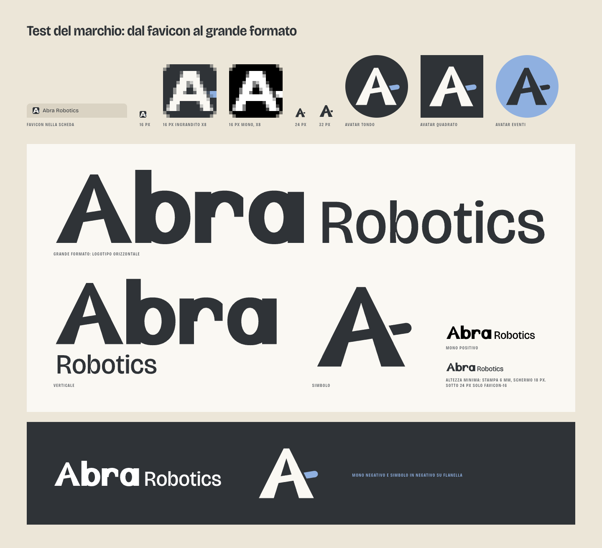
Il gesso blu è il segno che il sarto fa sulla stoffa prima di tagliare: si vede bene e si cancella. È il colore firma di questa direzione e non è usato dalle altre quattro. Il giallo della v1 è eliminato.
Bricolage Grotesque, licenza OFL, in sei tagli statici ricavati dal file variabile: font veri nei PDF dei preventivi e nessuna dipendenza da CDN. Il titolo sta a peso 640 e larghezza 94, più calmo che nella v1.
Misura cosa farà il robot.
Ogni fase ha un criterio di accettazione scritto prima di cominciare. Paghi solo le fasi che approvi.
P2 · Simulazione · 4 settimane
sotto 2 kg
Bordo sottile blu: da approvare, dato di esempio.
Flanella piena: misurato e firmato.
Solo dove misura qualcosa di vero, allineato all'oggetto.
Carta modello con angolo tagliato e tacca: un oggetto definito.
Un punto preciso nello spazio.
Alla fine di ogni fase: qui decidi se proseguire.
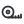
MisureI robot sono foto ufficiali Unitree usate come segnaposto dichiarato, in scala di grigi sulla carta. Numeri, criteri e importi inventati portano l'etichetta "Esempio".
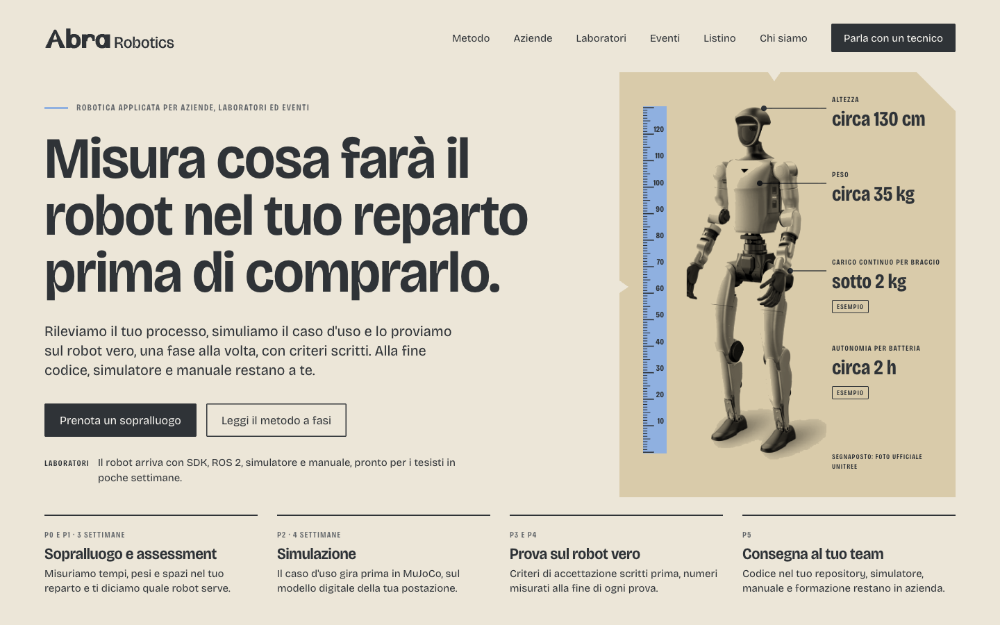
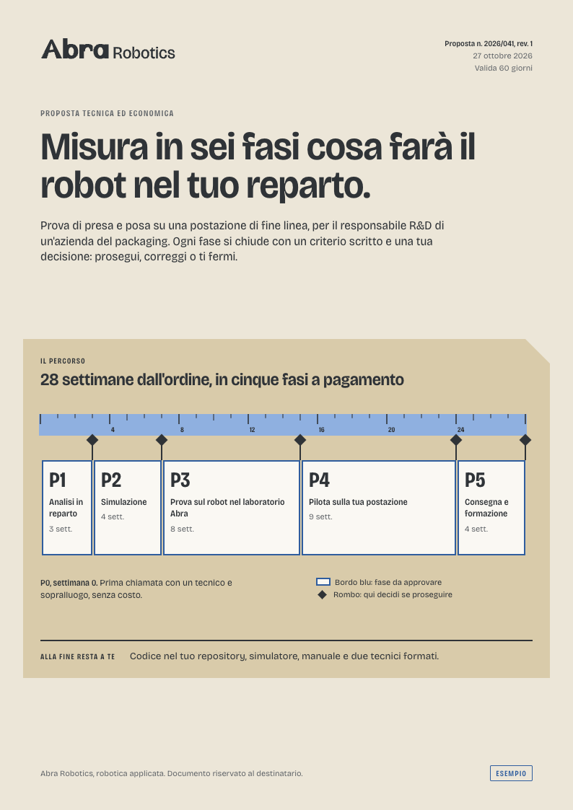
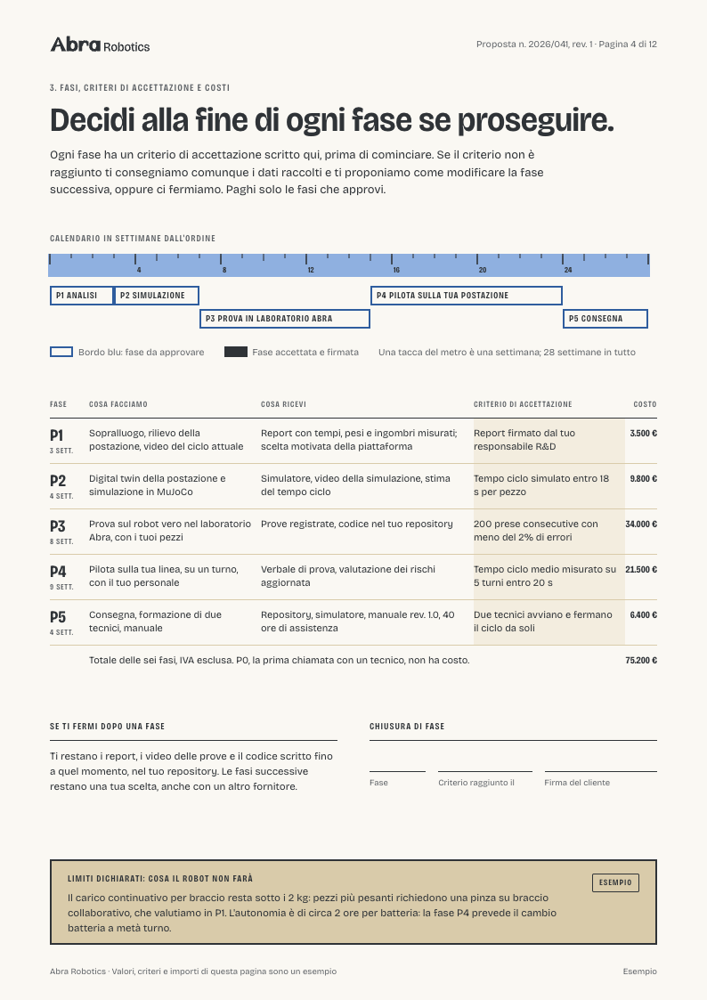
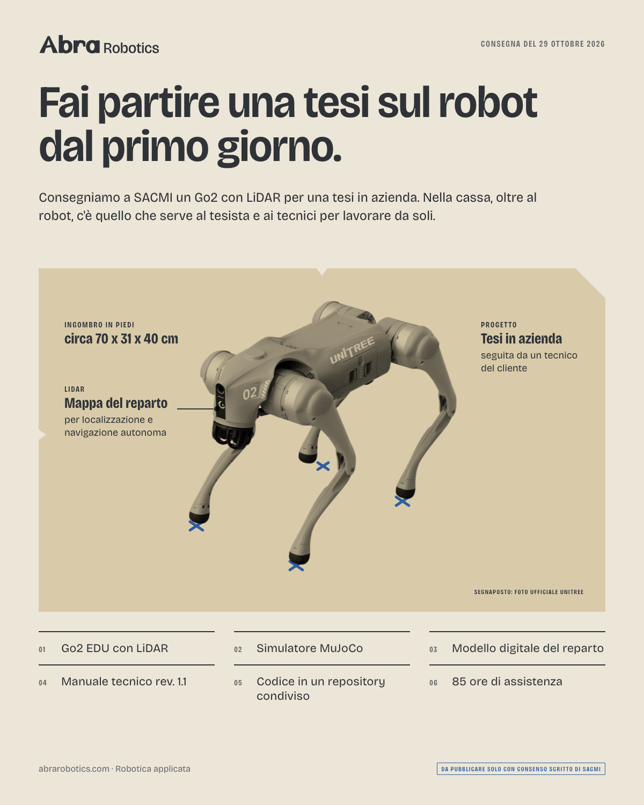
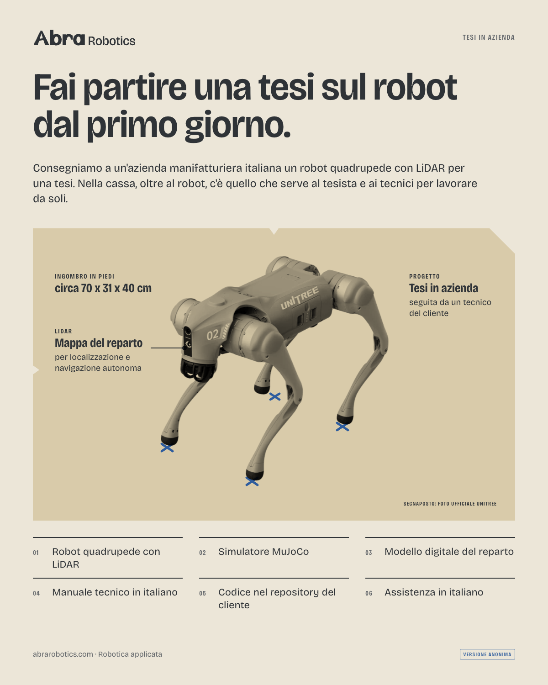
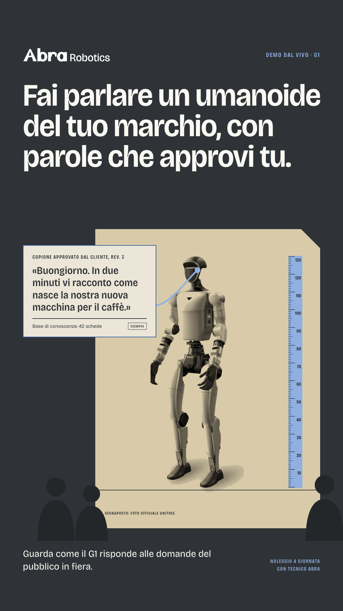
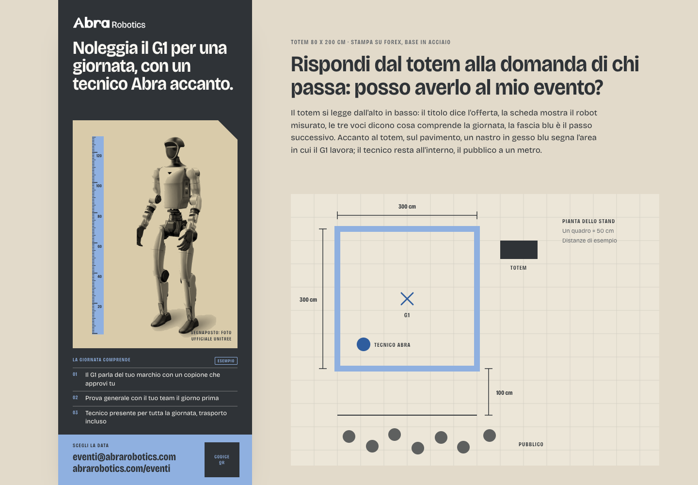
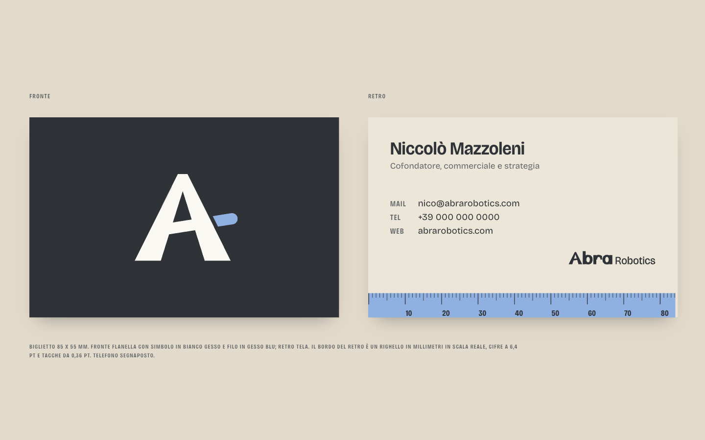
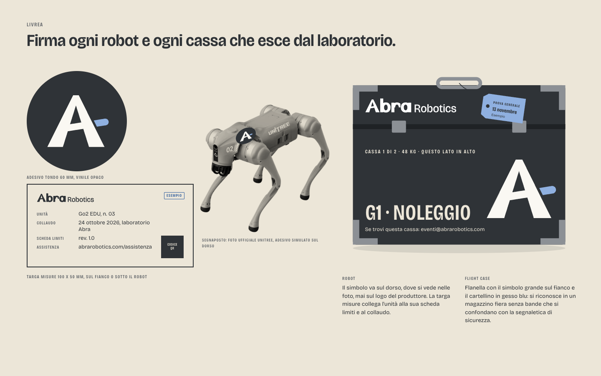
Nei testi per i clienti le fasi hanno nomi del settore; le parole della sartoria restano nella logica del sistema. "Sartoriale" è vietata.
Il robot appare sempre su un pezzo di carta, misurato. Chi cerca un fornitore "AI" a colpo d'occhio deve leggere un secondo in più.
La flanella è il fondo scuro solo per eventi, social e casse. Il resto vive su tela chiara.
Della sartoria restano gli strumenti e i gesti. Tessuti, manichini e forbici restano fuori, per non scivolare nel vicino di Figure.